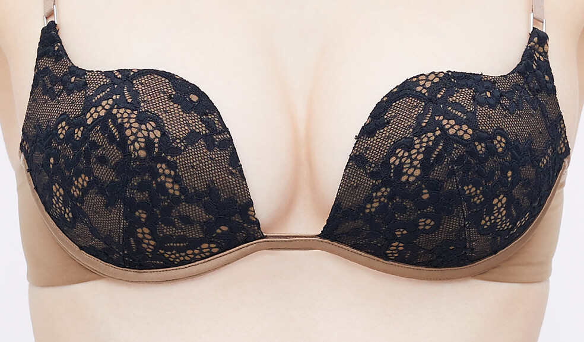
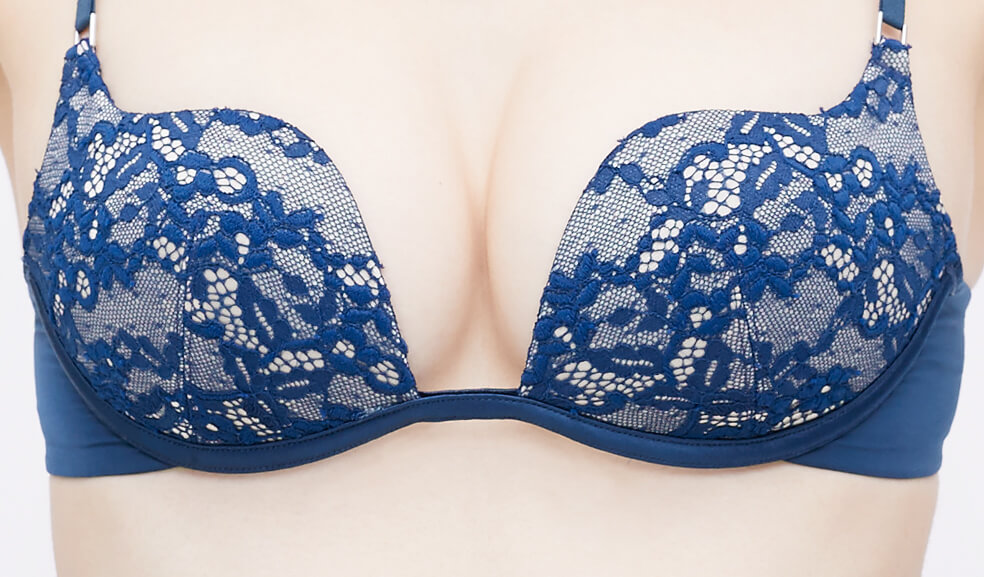
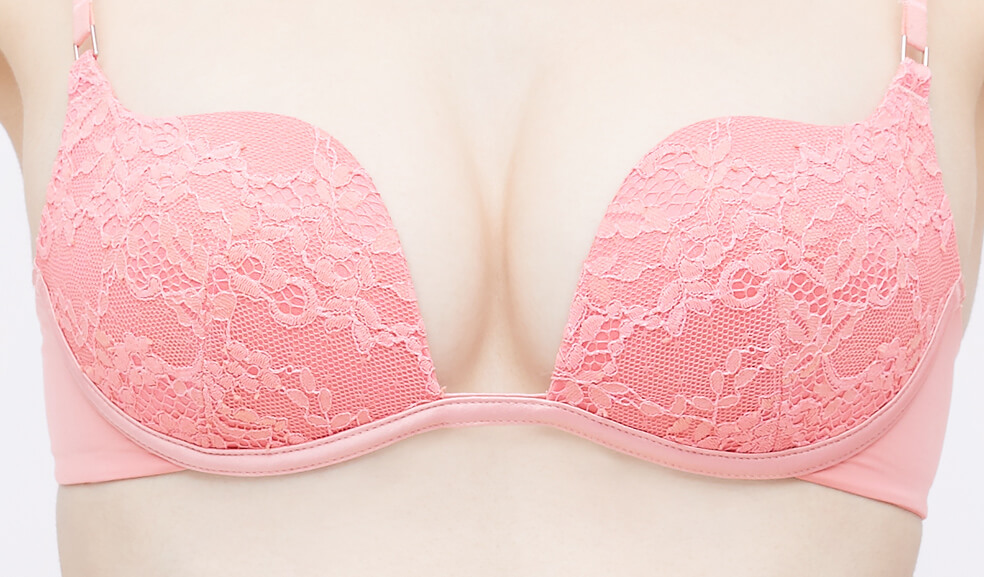
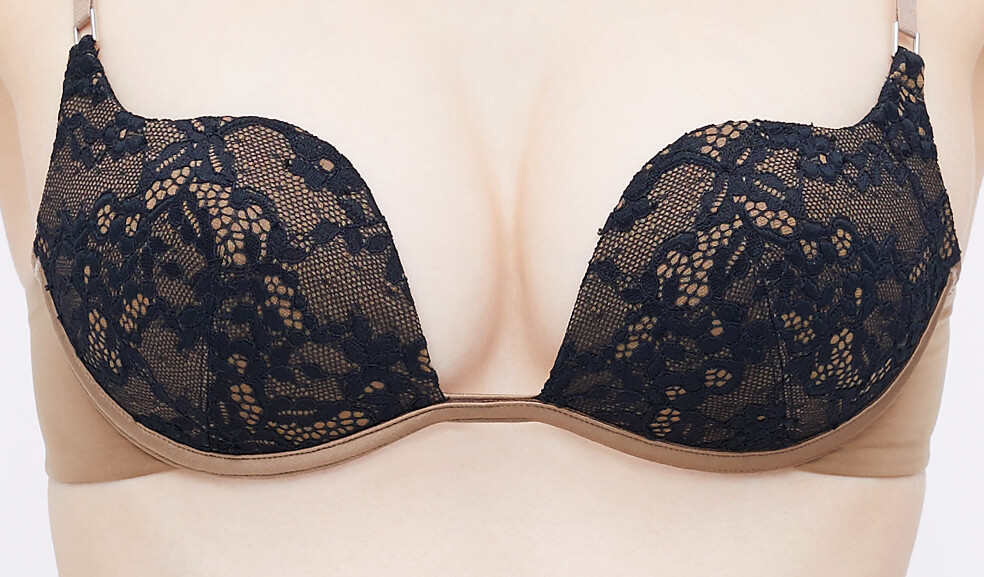
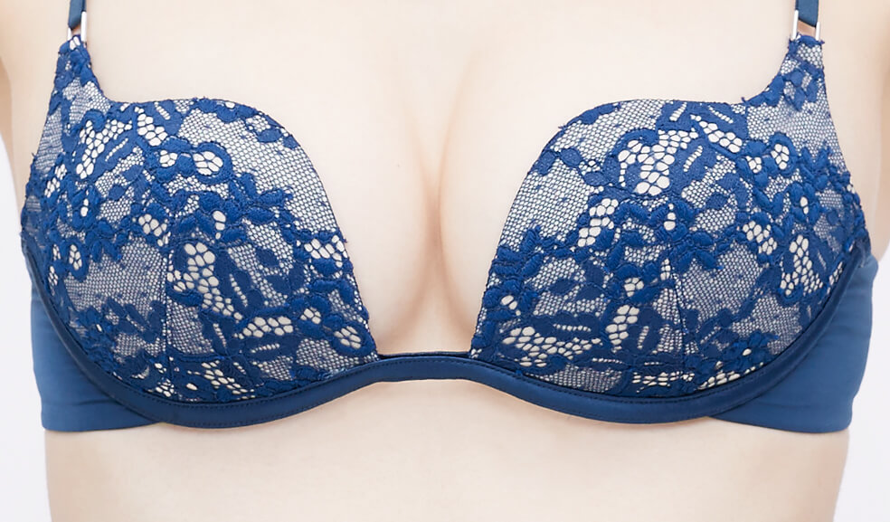
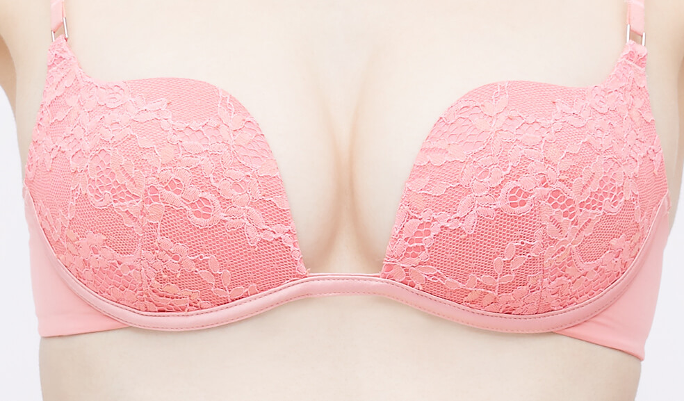
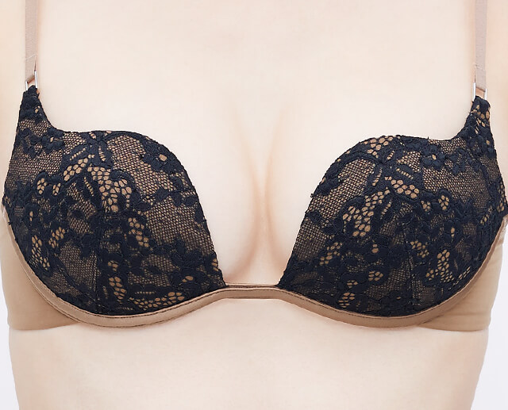
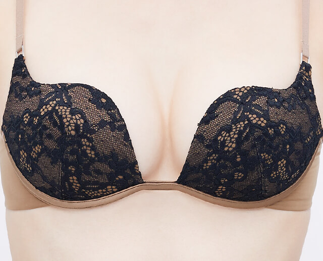

 



自由のブラ
「ラクして美しい」という自由をバストに。
お洒落には興味があるのに、
下着に関してはすっかり
着け心地重視になってしまった
「隠れノンワイヤー女子」のあなたへ。
今こそ、ラクなだけのブラを脱ぎ捨てて、
胸を張って美しく、
着け心地だけでない意識改革を。


USERS VOICE
隠れノンワイヤー女子の
意識改革はじまってます！

-
ワイヤーが入ってないブラは盛れないイメージでした。Tシャツを着たときは胸が広がり、垂れてみえるし悩みでした。今回自由のブラを試させていただくとノンワイヤーなのに胸が中央に向かって上がり、Tシャツを着たときも胸の形が綺麗にみえて感激しました！なおかつワイヤーが入っていないぶん、ストレスフリーで今までつけてきたブラの中でダントツ良かったです！これからもこのブラを愛用させていただきたいです！
(h.o 23歳)
-
つけた瞬間、つけ心地がいい！と思いました。生地がツルっとしていて、なのにズレにくい！！！形も綺麗にバストメイクされてとても満足です。私は胸が大きく、太って見えるのが凄く嫌なんですが、こちらのブラをつけると、「シュッ！」っとして見えます(^^)毎日つけたいです！
(crea 30歳)
-
ノンワイヤーは可愛くないというイメージでしたが自由のブラを見てすごく可愛く上品だったので、着けるとテンションがあがるし着け心地も楽なのでリピートしたいと思います。
(りまママ 34歳)
-
今までノンワイヤーブラはあまり形が綺麗に見えることがなく、大事な日に着けられないものだと思っていました。今回の自由のブラは今までのと違って形が綺麗で着け心地も良くそんな日でも着けられるなって思いました！
(なーち 24歳)
-
なめらかな着け心地で最高です！「自由のブラ」まさにその通り！子育てで目まぐるしく忙しい日々ですが女性らしさは無くしたくない！下着もオシャレしつつ子育ても頑張りたいと思います(*^_^*)ありがとうございました！
(みーちゃん 24歳)
-
シンプルなデザインは普段使いにも良いし、ブラジャーは寄せて上げて苦しいイメージだったけど楽に着れて嬉しいです。
(ココ 34歳)
-
ワイヤーの締め付け具合が嫌でノンワイヤーばかり着用してましたが他の下着はバストアップには欠けました。その点自由のブラはつけ心地もよく谷間もでき大満足！
(きいまま 32歳)
-
初めて着けてみて「軽い！！！苦しくない！！！」というのが正直な感想です！普通のブラだと肩が凝りますが、こちらの自由のブラはそんなこともなく軽くつけられます(^^)普通のノンワイヤーよりも服を来た時にきれいな見た目にもなりますし、場所を選ばずに使えていいなと思います。
(ごまぴ 34歳)
-
普段からノンワイヤーブラを着けていますが、自由のブラは着けている感覚が全くなく楽ちんです。子育て中なので動きやすく快適です。
(ろあちゃん 27歳)
-
華奢なデザインがかわいらしくつけているだけで嬉しい気持ちになりました。細身のつくりでノンワイヤーなのにピタッとくっつき全くズレないのはすごいです！夏場は肩紐がTシャツから透けたりしますが華奢なのであまり気になりません。わたしは授乳中なのですが授乳にも使いやすく重宝しそうです！機能性もありデザインもかわいいのでとてもいいです！
(たいちゃんママ 30歳)
-
つけ心地がとても良くて、締め付け感はないのに胸もしっかりホールドされてて満足です。つけてる時胸の形も綺麗でとても気に入りました。ノンワイヤーブラは、シンプルで女性らしさに欠けるデザインが多い中、レースがついていてとてもお洒落なデザイン。つけている日はとても気分があがりそうです。ありがとうございます。他の色も買ってみたいです！
(はち 35歳)
-
立ち仕事で動きまわるので毎日ブラのズレや締め付け感に困っていました。自由のブラをつけてみた感想は本当に自由！ズレや締め付け感を気にすることなく仕事に集中することができました。ノンワイヤーなのにキチンと谷間を作ることもでき、楽だなんて！家のブラすべて自由のブラにしたいなと思います。
(ぷりこ 29歳)
-
着け心地がよくノンワイヤーなのにしっかりホールドされていて驚きました！下着が可愛いと日々のテンションも上がります。自由のブラは締め付けもなくノンストレスなので、長時間外出する時に積極的に使いたいと思います。
(ホワイト 30歳)
-
最初は、面積小さ…！！と不安でしたが、つけてみると、全然むしろ面積の小ささが快適でした！夏って意外と、ブラジャーの中も汗をかくので、このセンターレスのデザインは涼しいし、つけごごち抜群でした！ノンワイヤーブラって、貧乳の私には、ただの布を当ててるだけで、楽だけど物足りなさを感じていたのですが、この自由のブラは、まるでワイヤーブラのようなホールド感想と、ワイヤーブラのような無理やり作るバストアップではなく、自然なバストアップができて、着けごごちが本当に良かったです！！デザインも、シンプルかつ上品で、普段使いにぴったりだと思います！シャツにもひびかないデザイン、ブラのひもも、細くて華奢な感じが、夏にぴったり！4年ブラトップ愛用者でしたが、もう2・3着購入したいと思えるブラでした！ピーチ・ジョン様のブラ、本当にすごいです！
(kuku 31歳)
-
着け心地はとても良いです！ノンワイヤーの締め付けの無さ、けど谷間も作れました！普通のノンワイヤーはすぐに谷間がなくなってしまいますが、これはキープできたままでした。楽ちんですし最高です！締め付けがないので産後や授乳してるママにもオススメです。
(池さや 24歳)
-
デザインがとても気に入りました。セクシーで女性らしいデザインで、今までのノンワイヤーだとシンプルなものが多かったので気に入りました。付け心地もフィット感がすごくて付けてる事を忘れそうなくらい。ショーツもレースが綺麗でセクシーな下着です。
(くまさん 30歳)
-
ノンワイヤーは胸の形がきれいに出ないと思いこんでいたのですが、素材が優しくてしめつけもないのにしっかり胸をホールドされてキレイな胸の形になったのがとても気に入りました！！ブラの締め付けでかぶれてあせもになることが多いのですがそれもなかったです。家でのリラックスタイム以外にも遠距離移動を伴う旅行のときにも使いたいと思います！あと、デザインが大人っぽくてすごくキレイなのでデートでも使いたいと思います。
(はろん 29歳)
-
産後から10ヶ月経って、ピーチ・ジョンさんのおかげで、また可愛い下着を着れるきっかけになりました！授乳ブラやヨレヨレのパンツばかりだったので、久々に独身時代に戻った気分です！着け心地も最高で、締め付け感もなく、デザインも可愛くて、次は違う色を購入しようと思います！ありがとうございました！
(ももちん 27歳)
-
しっかりまあるく胸の形ができます。立体的なバストメイクができるのでノンワイヤーなのにすごいなぁと思いました。また、つけ心地もふわっと軽くてとてもいい感じでした。嫌な締め付けもないので、デイリーに使えますし特別な日に使っても大丈夫な女性らしいデザインなので素晴らしいと思います。
(yurika 28歳)
-
すぐにでも色違いがほしいです！デザインもシンプルだけどレースで上品だし、着け心地が何と言ってもラクで、なのにこのバストラインの仕上がりは夢みたい！ずっと眺めていたくなります(笑)
(ミキ 30歳)
-
今まで使っていたノンワイヤーブラは胸が潰れてしまうし、アンダーがズレてしまって、バストの形が崩れてしまう気がして敬遠していました。なので殆どワイヤーが入っているブラを着けていました。しかし、この自由のブラは胸が潰れず綺麗に見えて、デザインも華奢で可愛くてワイヤーブラのようなスタイルなので気分が上がりました！ノンワイヤーブラはリラックスしたいようなオフモードの日に着けていましたが、これなら特別な日にも着けたい！と思いました。
(ハチ 22歳)
-
ホールド感があってバストメイクできるし、デザインもワイヤーブラと変わらない！いつも使っているノンワイヤーブラはどこか手抜き感が出てお出かけや、仕事の時は使えなかったけどこれはデートの時でも使えちゃう！谷間のデザインも空間があってスッキリしてるから胸元が開いてる服でも気にせず着ることができそう！まさに自由のブラ！
(kaycat 27歳)
-
着け心地はとても軽く、締め付け感がないので楽〜！です。一見小さいように見えるカップも着用してみると安定感があり、綺麗なバストを演出してくれます。接地面積が少ないので、普段気になっている蒸れが全く気になりませんでした。デザインもレースが上品で高級感があり、これがノンワイヤーブラなの！？と思ってしまうほど。可愛いので着けているだけでテンションが上がるし、女性らしさを意識できます！今まで使用していたノンワイヤーブラも楽でしたが、その分バストメイクやデザインは二の次といった感が否めませんでした。その点、自由のブラは両方叶えてくれるので良い意味でノンワイヤーブラのイメージを覆してくれました！値段もお手頃なので手に取りやすいというのも魅力的です。色違いの購入も検討したいと思います。
(ぴよちゃむ 29歳)
-
着け心地が普通のノンワイヤーと変わらず、バストメイクはワイヤーブラと変わらず、谷間ができにくい私の胸にも谷間ができました！デザインも真ん中が開いていてセクシーだしパンツのレースも可愛いです。日常使いはもちろんデートにも躊躇なく使えます！
(ななみんちゅ 22歳)
-
ノンワイヤーブラは初めてだったのですが、ワイヤーがなくてもしっかり支えられてる感があります。デザインもレースでとても可愛らしいです。
(あやさま 25歳)
-
普段使っているワイヤレスブラは、つけている感じがしなくてラクですが、ボディメイク効果がなく、胸が垂れたおばさんのような体型に…。それがこちらの自由のブラはつけた瞬間ビックリ！つけてる感じが全くなく、なんとかなりのボディメイク効果があり、谷間までできてしまう！ずれることもなく、胸にピッタリフィット。デザインも可愛くて、もう言うことなし！色違いで揃えたくなりました。
(おじゃまるこ 31歳)
-
ノンワイヤーを感じないくらいしっかりと胸を支えてくれて寄せたお胸のお肉が逃げてかなかったです。つけ心地もきつくなかったです。カップとカップが離れているデザインなので谷間が超絶可愛いです。
(ちいやん 22歳)
-
締め付け感がなく、まるで着けていないような心地ですが、しっかりとバストメイクしてくれます。シンプルかつレースで高級感があるデザインもとても気に入りました。今までノンワイヤーのブラだと気にいるデザインのものがなかったのでとても嬉しいです。ノンワイヤーブラのイメージが覆りました。ナイトブラとして着用しながらも普段使いできそうです。是非色違いも購入したいです！！
(yoon 21歳)
-
ノンワイヤーだから楽に着けていられる、でもノンワイヤーなのに胸の形がきれいに出る、というのに驚きました。私は小胸できれいなラインが出ることはほとんどなかったのですが、自由のブラは私でもふっくら丸い胸を作ることができて嬉しかったです。
(むむ 28歳)
-
着けた瞬間から、お胸にフィットする感じ。変な締め付けもないのに綺麗な谷間が現れます！お仕事でヨガインストラクターをやっているので、沢山、動くのですが、あれ！？私、ブラ着けてたっけ？と忘れるくらい、心地が良かったです。デザインも可愛らし過ぎず、セクシー過ぎず、普段使いから、特別な日も使えちゃう！ブラストラップが又、絶妙な太さで、肩こりにもならずにストレスフリーです！
(れい 27歳)
-
ノンワイヤーなのにしっかり胸を包んでくれてつけ心地もよく気に入っています。楽で可愛い、これは毎日使いたいです！！
(YS 37歳)
-
着けてる感じがあまりしなくて動きやすく、締めつけも全然感じなかったです。自由のブラを着けてるとリラックス出来ます。
(アン 33歳)
-
付け心地最高です。ノンワイヤーはホールド力やサイズ感が微妙でバストメイクできないという印象でしたが、自由のブラはホールド力もサイズ感も完璧でした。服の上から見える形もすごく綺麗です。そしてカップの間の距離があるため、すごく楽です。また、小さく軽いので盛れないと思ってましたが、いざ付けると結構盛れてびっくりしました。他のノンワイヤーは、休みの日用という位置付けになりがちですが、この自由のブラは勝負の日でも使いたいです。
(ゆん 27歳)
-
まず、見た目がワイヤーブラと違いがなくて、これが本当にワイヤレス？！と驚きました。着け心地は抜群です！ホールド感よし、軽さよし、デザイン良しの100点満点！！しかも、全然ずれない。それなのに、締め付け感がなくて、着けていないかのようなストレスフリーな着け心地は感動しました！やっぱりPJのワイヤレスはNo.1です！
(ポチ 33歳)
-
着け心地がとても良いです！｢自由のブラ｣その名の通りストレスを感じることなく楽に着こなせました！ワイヤーがないとこんなに楽なんですね！
(ざべす 25歳)
-
パステル調の色なのでとても女の子らしいイメージで可愛かったです。かなり体を動かす仕事をしているので、とても動きやすく、ズレることがなかったので、今後も着用したいと思いました。ノンワイヤーブラはスポーツ時や、トレーリング時、仕事の時に使用することが多かったですが、可愛いデザインであれば、プライベートでも使用したいと思いました。後は、ショーツが大きく、もう少し小さいサイズがあるといいなと思いました。
(あり 25歳)
※口コミ内容はお客様個人のご意見・ご感想です。使用感・効果には個人差があります。